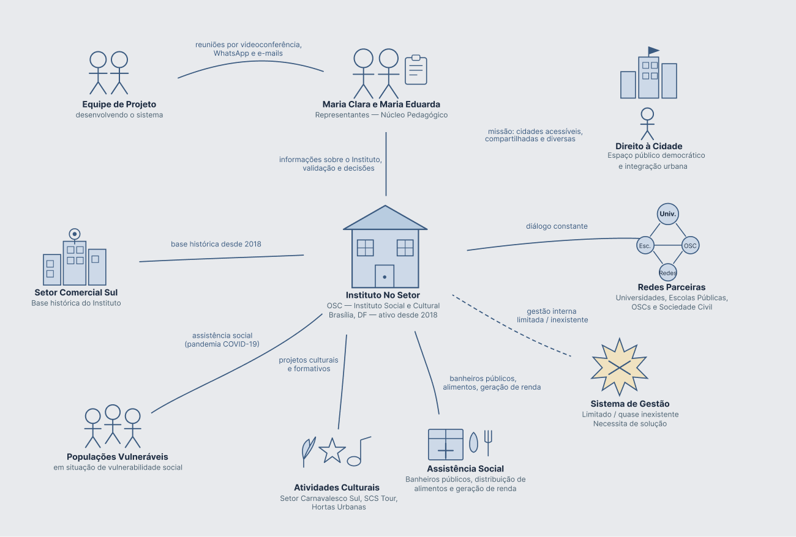
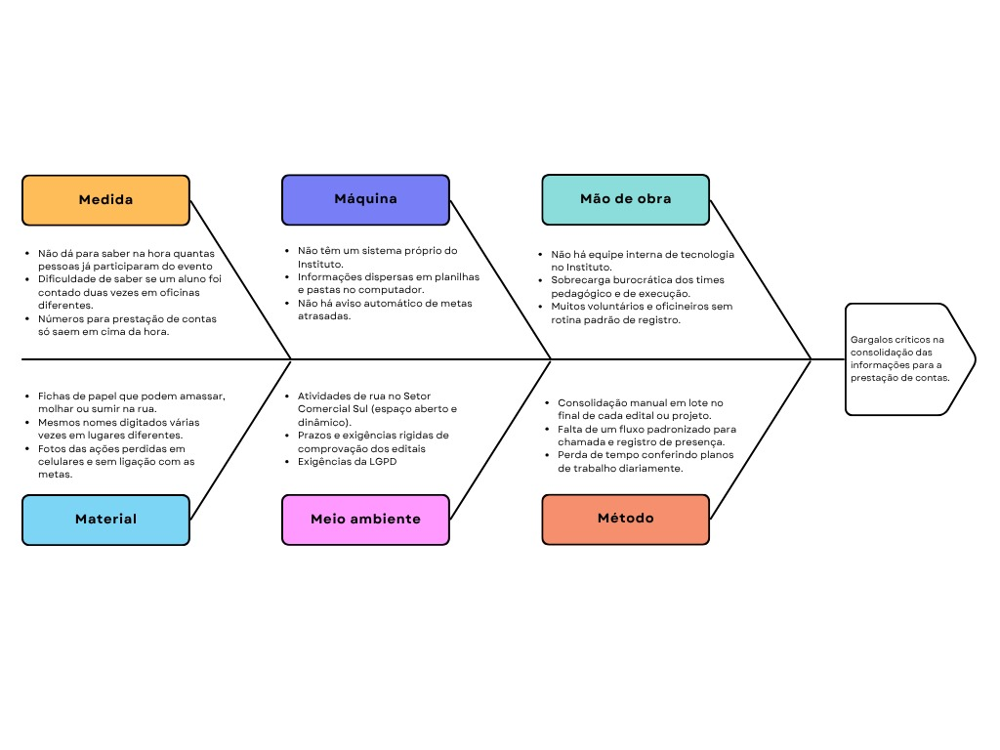
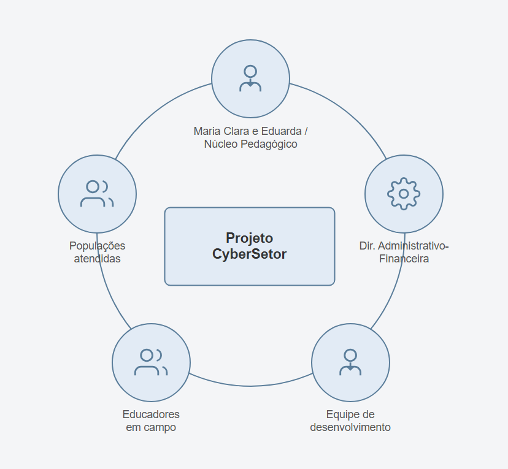

1. Cenário atual do cliente e do negócio¶
| Data | Versão | Descrição | Autor(es) |
|---|---|---|---|
| 01/09/2026 | 1.0 | Versão inicial | Equipe CyberSetor |
| 05/09/2026 | 1.1 | Revisão das seções 1.4, 1.5 e 1.7 | Equipe CyberSetor |
| 14/09/2026 | 1.2 | Identificação institucional das representantes do Instituto nas seções 1.1, 1.5 e 1.6; mapa de stakeholders alinhado à validação por área da seção 7.3.1 | Vinicius Vieira e Maria Eduarda Marques |
| 17/09/2026 | 1.3 | Segmentação de clientes alinhada ao escopo da seção 2.3: registro de presença e carga horária no lugar da emissão de certificado | Equipe CyberSetor |
| 17/09/2026 | 1.4 | Dimensionamento do problema, matriz de interesse e poder com estratégias de engajamento, distinção entre usuário, titular e beneficiário, aprofundamento da área administrativo-financeira e heterogeneidade dos editais | Rodrigo Henrique e Daniel Batista |
1.1 Identificação do Cliente/Parceiro¶
- Nome Institucional: Instituto Cultural e Social No Setor (Instituto No Setor).
- Natureza Jurídica: Organização da Sociedade Civil (OSC) sem fins lucrativos, atuando como instituto social e cultural regido pelas normas do Marco Regulatório das Organizações da Sociedade Civil — MROSC (Lei Federal nº 13.019/2014).
- Interlocutores e Estrutura de Contato:
- Presidência: Rafael, a quem cabe a visão consolidada das operações e das parcerias.
- Núcleo pedagógico: Maria Clara e Maria Eduarda. Não confundir com Maria Eduarda Marques, integrante da equipe CyberSetor — ver seção 7.1.
- Coordenação e rotina administrativo-financeira: Fillipe Ramos.
- Área de projetos: Fran.
- Canais Formais de Interação: Reuniões periódicas presenciais e remotas, canal institucional no WhatsApp e correio eletrônico.
- Papel no Projeto: Clientes e especialistas de domínio, responsáveis por descrever a rotina de trabalho, prover amostras de instrumentos de gestão, priorizar funcionalidades do produto e validar incrementalmente as entregas.
1.2 Introdução ao Negócio e Contexto¶
O Instituto Cultural e Social No Setor atua há cerca de oito anos na ocupação democrática do espaço público e na defesa do direito à cidade. Com fundação e sede histórica no Setor Comercial Sul (SCS), região central de Brasília, a organização converte áreas públicas em palcos de convivência cidadã, articulação comunitária e profissionalização.
Ao longo de sua trajetória, o Instituto ampliou seu escopo: o trabalho iniciado com eventos culturais e ocupações artísticas (como o Setor Carnavalesco Sul e o SCS Tour) expandiu-se, sobretudo a partir da pandemia de Covid-19, para ações de assistência humanitária, zeladoria urbana, capacitação técnica e promoção dos direitos humanos para populações em extrema vulnerabilidade.
Para sustentar essas intervenções, o Instituto articula parcerias com a administração pública nas esferas distrital e federal (como SEDET-DF, FAC-DF, Fiocruz e Ministério da Cultura), além de emendas parlamentares. A formalização desses convênios impõe deveres legais estritos de prestação de contas. Entretanto, a gestão dos dados operacionais e financeiros ainda repousa em controles manuais desconexos e planilhas eletrônicas frágeis, expondo o Instituto ao risco de inexecução e sanções financeiras.
1.3 Rich Picture e Mapeamento do Fluxo do Problema¶

O Rich Picture situa a articulação institucional. O fluxo operacional em que os gargalos se originam está modelado em notação BPMN, na página B1 · Modelo do processo atual, e percorre as seguintes etapas: 1. Financiadores e Editais: O ciclo nasce na captação de editais públicos e termos de fomento, que estipulam metas quantitativas, prazos e parâmetros rígidos de comprovação. 2. Projetos e Metas: A Diretoria desdobra os compromissos em planos de trabalho segmentados por linhas orçamentárias. 3. Descentralização em Formulários e Planilhas: As metas de campo são distribuídas em formulários avulsos do Google Forms, enquanto a execução financeira é lançada na Matriz de Aquisição em planilhas Excel desprovidas de integração. 4. Campo, Presença e Evidências: Educadores e assistentes executam atividades formativas no SCS, registrando frequência em listas de papel e fotos em aparelhos celulares pessoais. 5. Setor Administrativo-Financeiro: O núcleo financeiro executa tomadas de preço e desembolsos em sistemas públicos externos sem sincronia em tempo real com as comprovações pedagógicas. 6. Consolidação manual e prestação de contas: no encerramento dos ciclos, a equipe transcreve dados e compila mídias para gerar os relatórios exigidos pelos órgãos de controle.
1.4 Identificação e Dimensionamento Empírico do Problema¶

O processo atual gera descompasso entre a execução prática no SCS e a comprovação exigida pelos órgãos concedentes. A ausência de um sistema integrado centralizado impõe os seguintes gargalos mensuráveis:
- Projetos em paralelo: seis projetos foram identificados nominalmente na conversa de 15/09, pelos códigos 061 a 065 e 068, este último paralisado. O total em execução a cada momento será apurado na visita de observação.
- Volume de Planilhas Dispersas: Cada projeto exige uma planilha de acompanhamento de metas e uma Matriz de Aquisição exclusiva em Excel. São dezenas de arquivos desconexos em unidades individuais do Google Drive e em discos rígidos locais, sem fórmulas automáticas consolidadas e vulneráveis a exclusões acidentais de registros.
- Atividades e participantes: oficinas formativas — entre elas serigrafia, fotografia, música e arte urbana — convivem com eventos urbanos abertos, cada tipo com exigência de comprovação distinta. A contagem de oficinas por mês e de participantes por etapa é objeto da visita de observação.
- Evidências acumuladas: a apuração de um edital reúne fotografias e vídeos gravados nos telefones particulares dos oficineiros e listas físicas de frequência, sujeitas a perda, rasura e umidade. O volume por edital ainda não foi medido.
- Consolidação manual: antes de cada prazo de prestação de contas, analistas e coordenadores fazem a triagem das evidências e o cruzamento com a contabilidade, linha a linha. O tempo gasto é descrito pelo Instituto como um dos maiores custos do ciclo, e sua medição entra na visita de observação.
- Frequência de Inconsistências e Risco Crítico de Glosa: A falta de visibilidade em tempo real faz com que metas em atraso só sejam percebidas ao final do cronograma. Isso impede a solicitação tempestiva de Termos Aditivos ou justificativas formais prévias, acarretando o risco de glosa (devolução compulsória de recursos ao erário público sob correção monetária, nos termos do art. 64 da Lei 13.019/2014).
- Heterogeneidade de Editais e Plataformas: Convivência paralela com regulamentos de órgãos distintos (SEDET-DF, FAC-DF, Fiocruz), cada qual operando com plataformas próprias (TransferGov, sistema Parcerias e Internet Banking) e formatos documentais próprios.
1.5 Desafios do Projeto¶
- Operação de Campo e Resiliência sem Conexão: Disponibilizar uma interface leve e intuitiva para que oficineiros registrem presenças e capturem evidências no SCS sob oscilações severas de rede móvel, com capacidade de armazenamento em cache no navegador e envio posterior com tratamento de duplicidade no servidor.
- Governança de Dados Pessoais e LGPD: Segregar o acesso aos dados nominais e cadastrais de crianças, adolescentes e populações em situação de vulnerabilidade, restringindo-os ao núcleo pedagógico e protegendo-os de consultas por setores administrativos ou públicos externos.
- Autonomia operacional e manutenção: reduzir o custo e a complexidade de manutenção, de modo que a operação cotidiana não dependa de equipe interna de tecnologia. A administração técnica e o custeio após a disciplina são dependências reais, tratadas no plano de transferência da seção 2.6.
- Viabilidade Técnica dos Relatórios frente à Variedade de Editais: Devido à disparidade entre os formulários de cada órgão governamental, o sistema foca em gerar um relatório consolidado próprio, com exportação tabular e índice ordenado de comprovações fotográficas com metadados. A reprodução idêntica de formulários governamentais customizados fica condicionada à padronização normativa ulterior dos concedentes.
1.6 Mapa e Matriz de Stakeholders¶
Para mitigar ambiguidades de projeto e resguardar conformidade com a LGPD, a caracterização dos agentes distingue quatro categorias essenciais: * Usuários do Sistema: Indivíduos que operam o software diretamente para inserção de dados, monitoramento ou emissão de relatórios. * Titulares dos Dados: Pessoas físicas cujas informações biográficas, fotográficas ou cadastrais são armazenadas e tratadas pelo sistema. * Beneficiários Diretos/Indiretos: Comunidade e cidadãos impactados pelas ações sociais e culturais, mesmo quando não cadastrados nominalmente. * Stakeholders Externos: Agentes institucionais que influenciam as regras de negócio, o financiamento e a aceitação das contas.

Matriz de interesse e poder¶
A responsabilidade de validação de cada conjunto de funcionalidades está detalhada na seção 7.3.1.
| Stakeholder | Papel no Contexto | Poder / Influência | Interesse | Estratégia de Engajamento e Participação |
|---|---|---|---|---|
| Financiadores Públicos (SEDET-DF, FAC-DF, Fiocruz, MinC) | Concedentes, auditores e definidores normativos | Alto | Alto | Gerenciar de Perto: Garantir que o sistema estruture evidências auditáveis para cumprir estritamente as exigências da Lei 13.019/2014 e afastar o risco de glosa. |
| Presidência e Diretoria Executiva (Rafael) | Direção estratégica e tomada de decisão | Alto | Alto | Gerenciar de Perto: Disponibilizar painel gerencial sintético com saldo financeiro, status de metas e cronogramas consolidados dos projetos. |
| Diretoria de Projetos | Coordenação institucional e submissão de contas | Alto | Alto | Gerenciar de perto: validar o fluxo de desdobramento de metas, os parâmetros de aferição e os relatórios de prestação de contas (ver §7.3.1). |
| Coordenação administrativo-financeira | Usuário operacional da execução orçamentária | Médio | Alto | Manter satisfeito: alinhar o fluxo da Matriz de Aquisição com as metas, preservando a segregação de acesso aos dados de participantes (ver §7.3.1). |
| Núcleo pedagógico e oficineiros | Operadores do processo pedagógico e de campo | Médio | Alto | Manter informado e capacitar: simplificar a chamada, agilizar a captura de fotos e validar os fluxos de inscrição, presença e evidência em campo (ver §7.3.1). |
| Participantes de Oficinas e Cursos Formativos | Titulares de Dados e Beneficiários Diretos | Baixo | Médio | Proteger e Resguardar Direitos: Simplificar a coleta de termo de consentimento (LGPD) e garantir sigilo de dados pessoais e de imagem. |
| Populações Vulneráveis do SCS e Comunidade | Beneficiários Indiretos e Stakeholders Afetados | Baixo | Médio | Monitorar Impacto: Evitar barreiras burocráticas digitais de acesso aos serviços de convivência e acolhimento humano. |
| Equipe de Engenharia de Software (CyberSetor) | Concepção, especificação e entrega técnica | Alto | Alto | Comunicação Contínua: Seguir práticas ágeis (ScrumXP) e validar hipóteses diretamente com os representantes do Instituto. |
1.7 Segmentação de Clientes e Usuários¶
- 1. Presidência e Diretoria Executiva:
- Perfil: Lideranças que necessitam de tomada de decisão ágil sobre múltiplos projetos.
- Interação com o sistema: consulta ao painel consolidado de projetos, com situação das metas, cronograma e saldo. Trata-se de capacidade candidata, levantada em 15/09 e ainda pendente de validação com a presidência.
- 2. Diretoria de Projetos:
- Perfil: Analistas e coordenadores de parcerias com o setor público.
- Interação com o sistema: cadastro de requisitos e metas do instrumento, atribuição de responsável e prazo por meta, e geração do Relatório de Execução do Objeto.
- 3. Coordenação Administrativo-Financeira:
- Perfil: Profissionais que operam cotações de mercado, tomada de preços, cartas-convite, contratos e pagamentos bancários (TransferGov e Internet Banking).
- Interação com o Sistema: Atualização dos lançamentos da Matriz de Aquisição, verificação da conformidade documental de fornecedores e cruzamento com rubricas orçamentárias (sem acesso a dados individuais de alunos).
- 4. Educadores, Artistas e Voluntários de Campo:
- Perfil: Agentes culturais que realizam o atendimento presencial no território do SCS.
- Interação com o Sistema: Operação móvel via navegador para conferência de presença em oficinas, upload de registros fotográficos vinculados à atividade e registro de ocorrências de campo.
- 5. Participantes e Alunos das Oficinas:
- Perfil: Crianças, jovens e adultos inscritos nas atividades formativas.
- Interação com o Sistema: Não operam o painel de gestão; interagem exclusivamente por páginas públicas de inscrição e assinatura de termos de adesão/consentimento de uso de dados e imagem.
- 6. Populações em Extrema Vulnerabilidade e Comunidade Geral:
- Perfil: pessoas em situação de rua e frequentadores atendidos em ações de zeladoria, saúde e alimentação no SCS.
- Interação com o Sistema: Não interagem diretamente com a interface; seus atendimentos são computados de forma agregada e anônima pelos facilitadores de campo, resguardando dignidade e integridade física.